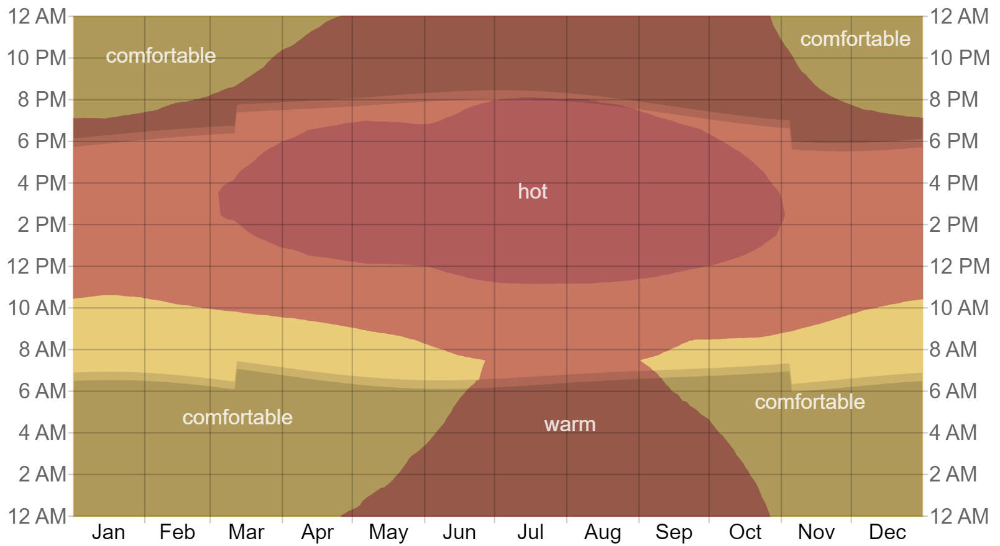

| Quick Facts | Home | Pictures | Information |
Climate
| Venezuela is firmly located in the tropics,
where the climate is generally constant and rarely varies with the
seasons. On the other hand, elevation results in notable regional
variations in flora, precipitation, and temperature. The average yearly
temperature in more than nine tenths of Venezuela is higher than 75 °F
(24 °C). Caracas, located in a high valley, has an average mean
temperature of around 72 °F (22 °C), whereas the adjacent port of La
Guaira has an average of approximately 81 °F (27 °C). At sea level,
low-lying Maracaibo averages 82 °F (28 °C), while Mérida, at more than
4,900 feet (1,500 metres), averages 66 °F (19 °C). Although there is a sizable temperate zone in the mountain area, compared to other Andean nations, the cold (arctic) zone at higher elevations is significantly less. Diurnal temperature ranges are more pronounced than month-to-month variations, a characteristic trait of the tropics. |

| The two seasons that make up Venezuela's
climatic year are the dry season, which starts in December and lasts
until the end of March, and the rainy season, which runs from May to
October and sometimes even into November. There are noticeable regional
differences in precipitation, though. In the summer, only the coastal
regions in the northeast receive significant amounts of rainfall. There are more dry areas along the northwest coast, where some locations receive less than 20 inches (500 mm) of precipitation a year. For instance, La Guaira gets an average of just 11 inches (280 mm). While the corresponding windward slopes of coastal and highland ranges are often well-watered, the rain shadow areas behind them are likewise very dry. Enough rainfall is often received inland in the Llanos and the southern heartland of the nation to sustain tropical savanna, luxuriant tropical rainforests (selva), as well as pastures and crops. The Llanos region frequently experiences seasonal cycles of floods and droughts, and tropical conditions can occasionally send torrential downpours to other locations, such the northern coast, which in December 1999 saw devastating floods and mudslides. |
| Page 1 | Page 2 | Page 3 | Page 4 | Page 5 | Page 6 | Page 7 |